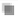
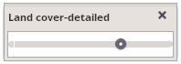

Setting opacity of displayed layers
Opacity for each layer can be set to the value between 0 – 100% using the icon for opacity setting beside each layer in the selected layers panel.
Clicking on the icon, a scale appears where opacity can be modified by dragging the marker on the scale.
